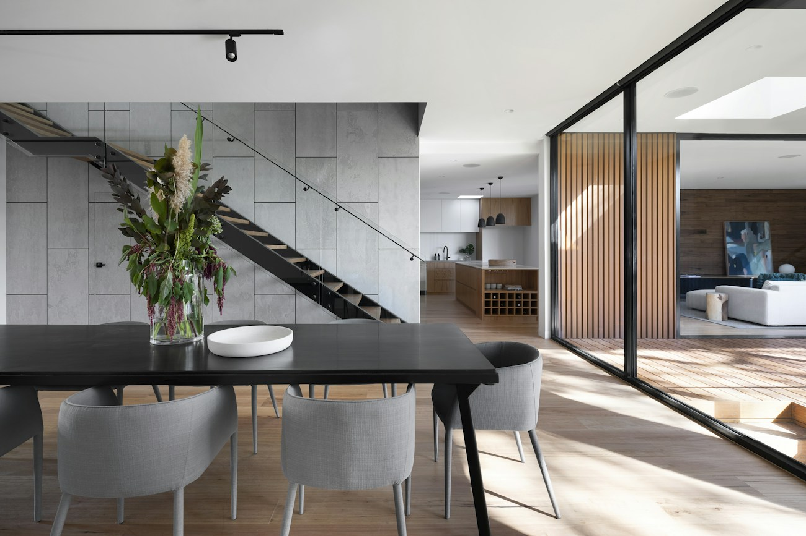
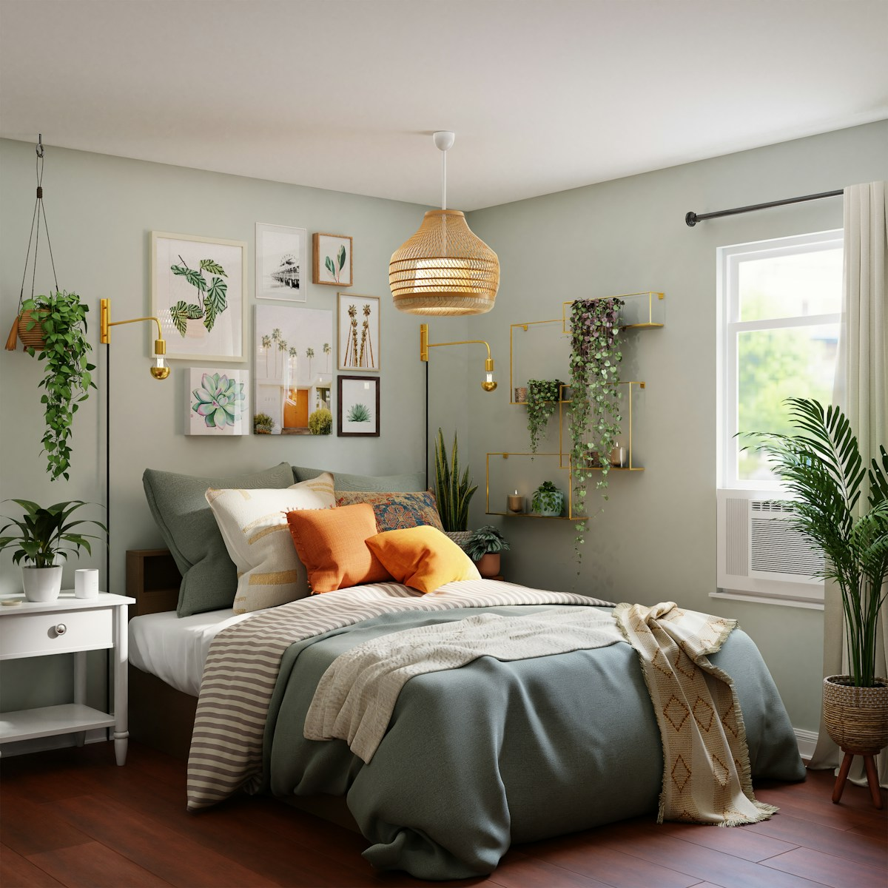
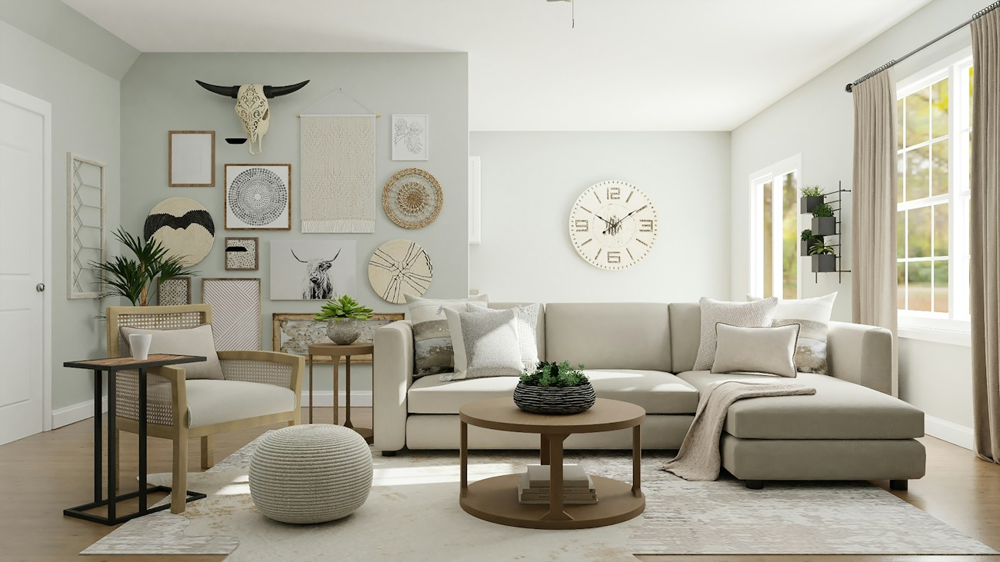

Anna
Radecka.
Dobry adres to początek.
Reszta jest Twoją historią.
Pomagam uporządkować wybór i znaleźć przestrzeń dopasowaną do Twojego życia. Uważnie słucham. Jasno mówię. Jestem po Twojej stronie.
SĄ MIEJSCA,
KTÓRE PO PROSTU
PASUJĄ DO CIEBIE.
Poranna kawa na tarasie. Krótsza droga do pracy.
Miejsce na rodzinę, odpoczynek albo nowy początek.
Zanim pokażę Ci nieruchomość, chcę poznać Twoją historię.
DOBRE MIEJSCA.
NOWE MOŻLIWOŚCI.
4 nieruchomościJeszcze nie ten adres.
Zmień kryteria, aby zobaczyć więcej propozycji.
Oferty, lokalizacje, parametry i ceny są fikcyjne. Zdjęcia ilustracyjne nie przedstawiają rzeczywistych nieruchomości na sprzedaż.
ZWOLNIJ.
ROZEJRZYJ SIĘ.
Przewijaj, aby przejść przez cztery rozdziały przykładowej prezentacji.
To interaktywny moodboard — nie wirtualny spacer 3D.




DOBRY
POCZĄTEK DNIA.
Duże okna, naturalne światło i przestrzeń na Twój własny rytm.
PO TWOJEJ
STRONIE
OD POCZĄTKU.
Cześć, tu Anna.
Najpierw chcę Cię poznać.
Wierzę, że dobre dopasowanie zaczyna się od rozmowy. Co chcesz zmienić? Na czym Ci zależy? Jak wyobrażasz sobie nową codzienność? Dopiero potem przychodzi czas na oferty.
Lubię jasne ustalenia, dobre przygotowanie i pytania zadane we właściwym momencie. Wspieram Cię w uporządkowaniu możliwości i wyborze kierunku, który ma sens dla Ciebie.
Najpierw Twój plan.
Ustalenie potrzeb, preferencji, zakresu współpracy i realnych możliwości. Bez zgadywania, czego szukasz.
Właściwa perspektywa.
Selekcja ofert dla kupującego lub przygotowanie sposobu prezentacji dla sprzedającego. Konkretne informacje zamiast przypadkowych propozycji.
Spokojnie, krok po kroku.
Prezentacje, pytania i ustalenia. Zakres wsparcia przy formalnościach oraz współpracę ze specjalistami określamy indywidualnie.
TWÓJ PLAN.
TWÓJ RYTM.
NOWY ADRES.
Chcesz kupić, sprzedać albo po prostu
uporządkować możliwości? Zacznijmy od rozmowy.